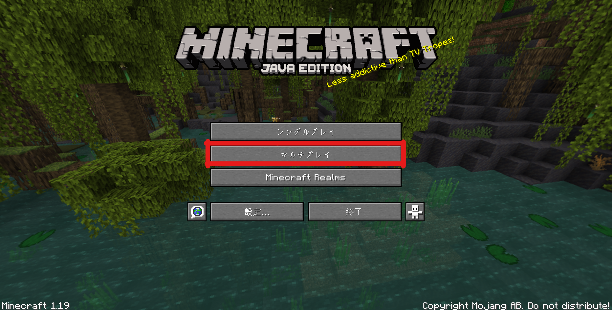
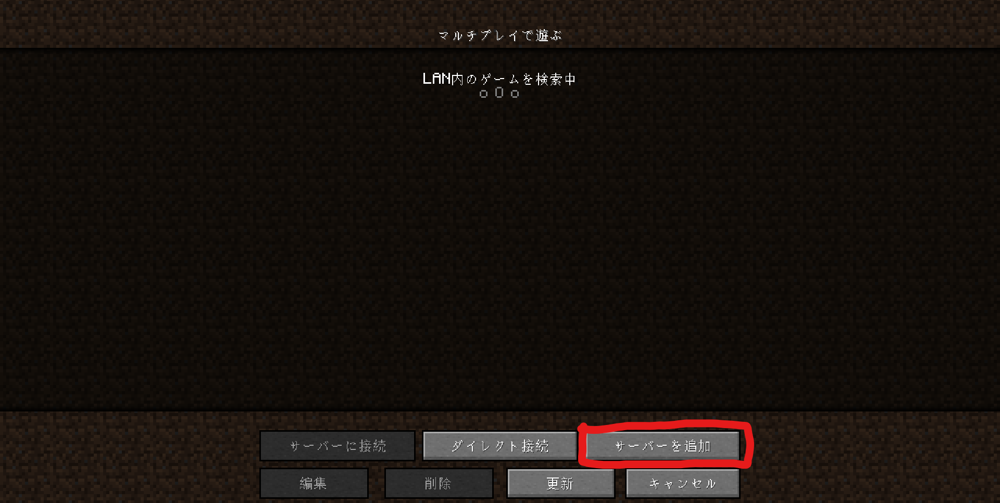
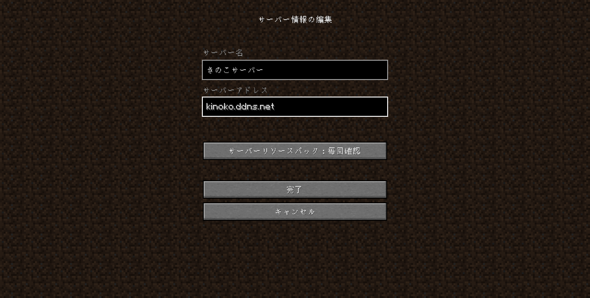
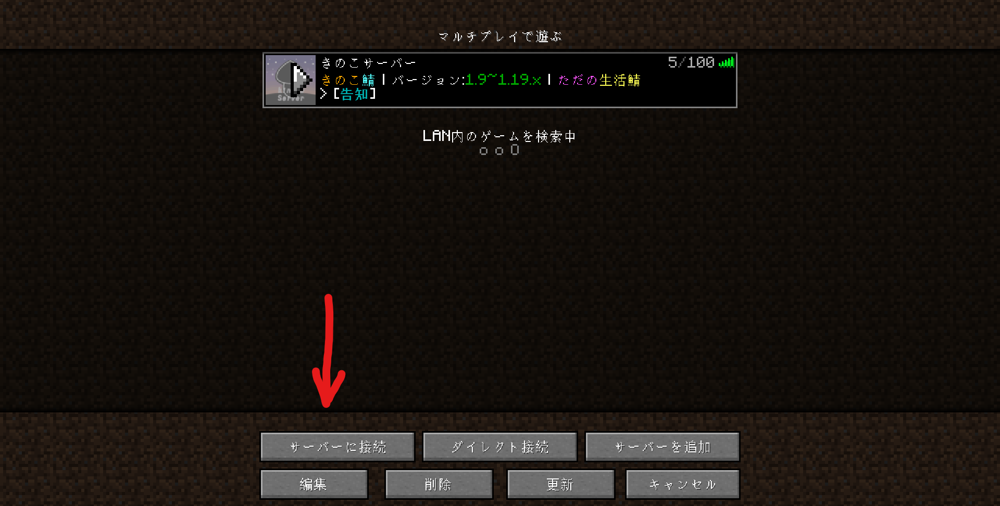

ここでは、サーバーに参加する時の説明とサーバーに参加した後の動きについて説明します。
まずはルールについて説明します！
ルールの確認ができた人から、参加方法について説明します！
① Minecraft Java Editionを起動する。
きのこサーバーの推奨バージョンは、1.13~1.19.3です。非推奨でもいいなら、1.8~1.12.2まで対応しています。② マルチプレイをクリック

③ サーバーを追加をクリック

④サーバーアドレスに「kinoko.ddns.net」と入力し、完了をクリック
サーバーリソースパックを「有効」にすると、一段と違ったプレイが楽しめるかもしれません。(実装中)

⑤ サーバーを選びダブルクリック

⑥ サーバーに接続して、「ようこそ！」の文字が見えたら完了！
サーバー接続直後は、森の中にスポーンします。
そこではいわゆるLobbyサーバと呼ばれる場所に出ます。
きのこサーバーでは、/server とポータルでサーバーを移動することができます。
サーバーの種類は、色々あります。サバイバル鯖やミニゲーム鯖など...こちらからご確認ください。
※ポータルはLobbyサーバーのみあります。Life鯖からの移動などはすべてコマンドです。コマンドが打ちにくいようであれば、Lobby鯖に戻ってください。
① Lobby鯖で歩く
まっすぐ歩いていくと、オレンジ色とかTNTとかいろいろ見えます。- オレンジ色の家に行くと、四角の水ポータルがあります。
そこに、身を入れればLife鯖に接続します。
Life鯖の説明- TNTやマグマ近くに行くと、四角のポータルがあります。
そこに、入るとMinigame鯖に接続します。
Minigame鯖の説明サーバーからポータルに戻るには、/server lobbyをチャットに打つ必要があります。
ここまでが、参加方法についての説明です！大体わかりましたか？
きのこサーバーは、Minecraft初心者から上級者全員が楽しめるようなサーバー運営を務めています！
ルールが多くて難しい...違反してないかな...みたいなことを考えることがあるかもしれませんが、大したことなさそうなものは違反対象とはみなしていません
安心してサバイバル生活を送ってください！サーバーで分からないことがあるならば、オンラインプレイヤーに聞くのもありです！
みんな優しいので大丈夫です！多分！ by さばぬし(´>ω∂`)
分からないことや質問は、ここからお問い合わせをしてください。